library(tidyverse)
library(tidymodels)
library(vip)6 Árboles de decisión y Random Forest
6.1 Árboles de decisión
Luego de utilizar la regresión lineal como un método de aprendizaje supervisado, podemos ahora saltar a un algoritmo más reciente: los árboles de decisión.
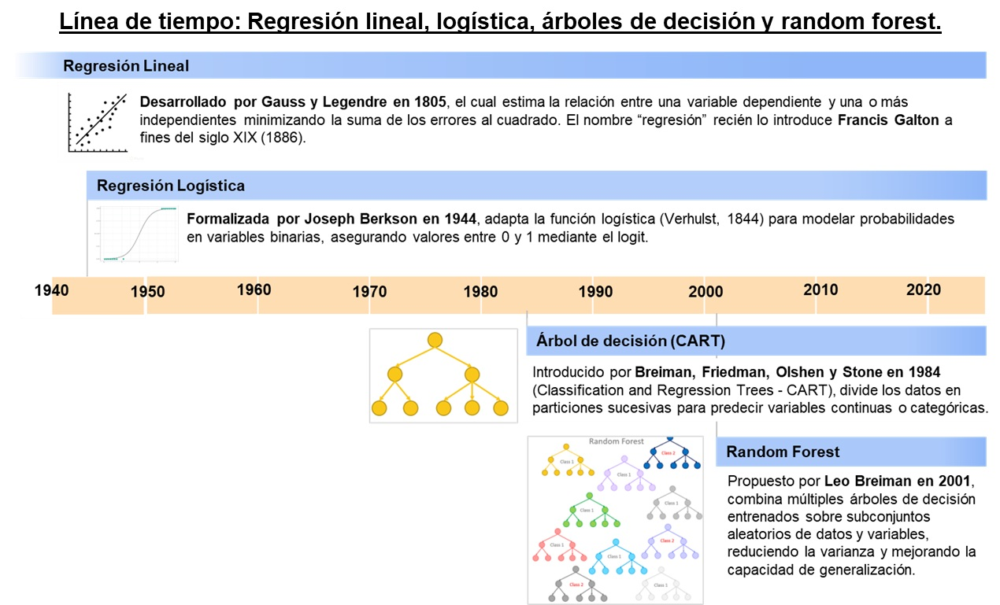
6.1.1 Definición
Un árbol de decisión es un modelo predictivo que representa un conjunto de reglas “si… entonces…” organizadas en forma de árbol. Parte de un nodo raíz (todos los datos) y, en cada nodo interno, divide los datos según el valor de una variable predictora para reducir la varianza /MSE.
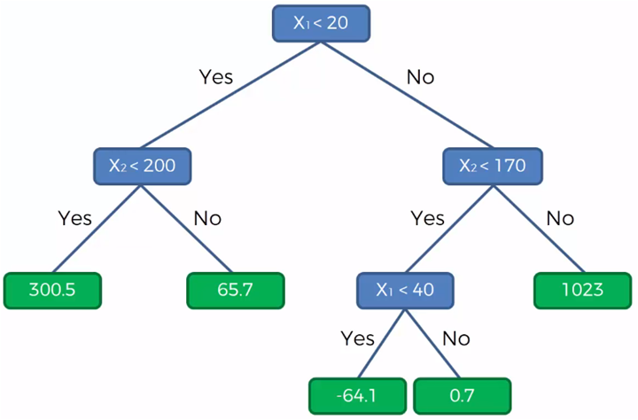
El proceso continúa hasta cumplir ciertos criterios de parada (profundidad, mínimo de casos, complejidad) y las hojas entregan la predicción final: promedio de la variable objetivo (regresión).
También se puede aplicar a clasificación. Eso lo veremos más adelante!
6.1.2 Ventajas y desventajas
Ventajas:
Interpretables: reglas “si… entonces…” fáciles de explicar.
Capturan no linealidades e interacciones sin ingeniería previa.
Poco preprocesamiento: no requieren normalizar; toleran outliers mejor que modelos lineales.
Mixtos: funcionan con variables numéricas y categóricas.
Rápidos de entrenar y útiles para generar hipótesis/segmentaciones.
Desventajas:
Sobreajustan e inestables: pequeños cambios en los datos alteran mucho el árbol (alta varianza).
Fronteras en “escalera” y predicciones por tramos; no extrapolan bien.
Sesgo en splits hacia variables con muchos niveles; cuidado al interpretar “importancia”.
6.1.3 Ejemplo simple de partición
Imagina que tenemos la siguiente data:
df <- tibble::tibble(
id = 1:10,
horas_estudio = c(1, 2, 2, 3, 3, 5, 4, 6, 2, 5),
ingreso = c(22, 35, 33, 40, 45, 35, 40, 21, 28, 24)
) Lo visualizamos en un gráfico de dispersión.
df |>
ggplot()+
aes(x=horas_estudio, y=ingreso)+
geom_point()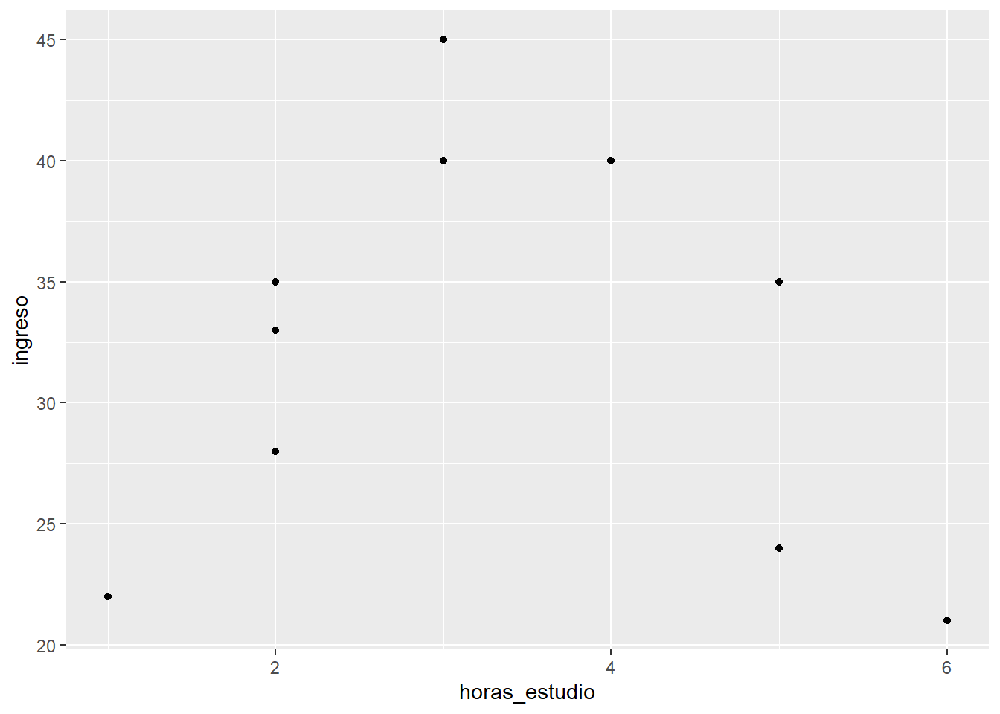
Generamos una primera partición:
df |>
ggplot()+
aes(x=horas_estudio, y=ingreso)+
geom_point()+
geom_vline(xintercept = 1.5, linetype = "dashed")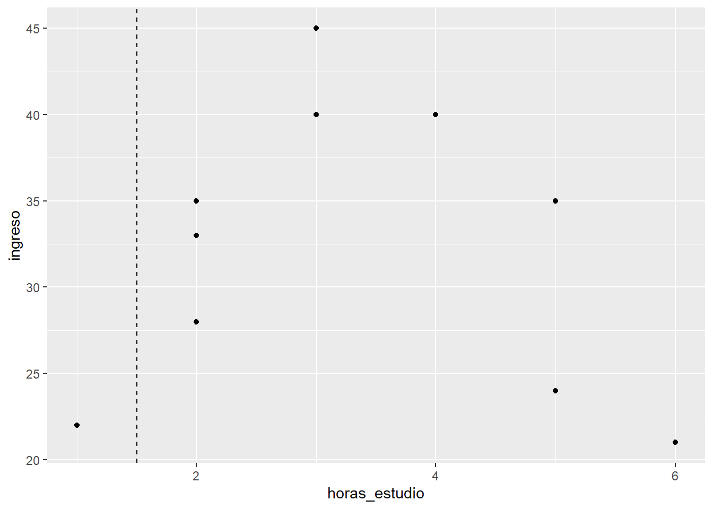
Dentro de cada una de estas secciones vamos a calcular un indicador, el cual es el RMSE a la media de cada uno.
Para el caso de la primera partición, como el error es 0, al tener sólo una observación, su RMSE será 0.
Para el caso de la segunda partición, calculamos los errores, los elevamos al cuadrado, los sumamos y sacamos promedio:
df |>
filter(horas_estudio>=1.5) |>
summarise(mean(ingreso))# A tibble: 1 × 1
`mean(ingreso)`
<dbl>
1 33.4df |>
filter(horas_estudio>=1.5) |>
mutate(error_ingreso=ingreso-mean(ingreso)) |> # calculamos el error
mutate(error_ingreso_al2=error_ingreso**2) |>
summarise(RMSE=sum(error_ingreso_al2)/n()) |>
mutate(RMSE*0.9)# A tibble: 1 × 2
RMSE `RMSE * 0.9`
<dbl> <dbl>
1 55.4 49.8Ahora, conociendo el grado de dispersión de cada una de las agrupaciones, podemos encontrar un puntaje para el umbral seleccionado.
Este umbral tendrá un puntaje que será la suma de la dispersión de cada sección. En este caso: 49.8
Ya tenemos una métrica para evaluar qué tan buena ha sido esta partición tomando como punto de corte 1.5. Y cómo serán las demás particiones posibles?
Una vez tengamos la función de costo de todas las particiones posibles, el modelo escogerá aquella en la cual el costo será el menor. Ok, ya tenemos el primer nodo.
6.1.4 Aplicación con una predictora numérica
Utilizamos nuestra base de datos:
library(tidyverse)
library(readxl)
library(tidymodels)
data <- read_xlsx("data/AML_2.xlsx")
data<- data |>
filter(!is.na(aml_index))set.seed(2025)
index <- initial_split(data)
training_data <- training(index)
testing_data <- testing(index) mi_receta_arbol <- recipe(aml_index ~ pbi_pc, data = training_data)arbol <- decision_tree(min_n=5) |>
set_engine("rpart") |>
set_mode("regression")wf_arbol <- workflow() |>
add_recipe(mi_receta_arbol) |>
add_model(arbol)fit_arbol <- wf_arbol |>
fit(training_data)
fit_arbol══ Workflow [trained] ══════════════════════════════════════════════════════════
Preprocessor: Recipe
Model: decision_tree()
── Preprocessor ────────────────────────────────────────────────────────────────
0 Recipe Steps
── Model ───────────────────────────────────────────────────────────────────────
n= 59
node), split, n, deviance, yval
* denotes terminal node
1) root 59 66.593350 5.266441
2) pbi_pc>=3813.495 39 18.884070 4.723333
4) pbi_pc>=15749.22 15 3.088373 4.074667
8) pbi_pc>=54674.97 3 0.706400 3.620000 *
9) pbi_pc< 54674.97 12 1.606767 4.188333 *
5) pbi_pc< 15749.22 24 5.539462 5.128750 *
3) pbi_pc< 3813.495 20 13.773500 6.325500
6) pbi_pc>=1118.465 11 4.157018 5.922727 *
7) pbi_pc< 1118.465 9 5.650956 6.817778
14) pbi_pc>=553.69 7 4.194143 6.627143
28) pbi_pc< 735.42 2 0.605000 6.090000 *
29) pbi_pc>=735.42 5 2.781280 6.842000
58) pbi_pc>=823.395 3 0.673400 6.530000 *
59) pbi_pc< 823.395 2 1.377800 7.310000 *
15) pbi_pc< 553.69 2 0.312050 7.485000 *# ══ Workflow [trained] ════════════════════════════════════════════════════
# Preprocessor: Recipe
# Model: decision_tree()
#
# ── Preprocessor ──────────────────────────────────────────────────────────
# 0 Recipe Steps
#
# ── Model ─────────────────────────────────────────────────────────────────
# n= 59
#
# node), split, n, deviance, yval
# * denotes terminal node
#
# 1) root 59 66.593350 5.266441
# 2) pbi_pc>=3813.495 39 18.884070 4.723333
# 4) pbi_pc>=15749.22 15 3.088373 4.074667
# 8) pbi_pc>=54674.97 3 0.706400 3.620000 *
# 9) pbi_pc< 54674.97 12 1.606767 4.188333 *
# 5) pbi_pc< 15749.22 24 5.539462 5.128750 *
# 3) pbi_pc< 3813.495 20 13.773500 6.325500
# 6) pbi_pc>=1118.465 11 4.157018 5.922727 *
# 7) pbi_pc< 1118.465 9 5.650956 6.817778
# 14) pbi_pc>=553.69 7 4.194143 6.627143
# 28) pbi_pc< 735.42 2 0.605000 6.090000 *
# 29) pbi_pc>=735.42 5 2.781280 6.842000
# 58) pbi_pc>=823.395 3 0.673400 6.530000 *
# 59) pbi_pc< 823.395 2 1.377800 7.310000 *
# 15) pbi_pc< 553.69 2 0.312050 7.485000 *El resultado del modelo lo podemos visualizar con:
library(rpart.plot)Cargando paquete requerido: rpart
Adjuntando el paquete: 'rpart'The following object is masked from 'package:dials':
prunefit_arbol |>
extract_fit_engine() |>
rpart.plot()Warning: Cannot retrieve the data used to build the model (model.frame: objeto '..y' no encontrado).
To silence this warning:
Call rpart.plot with roundint=FALSE,
or rebuild the rpart model with model=TRUE.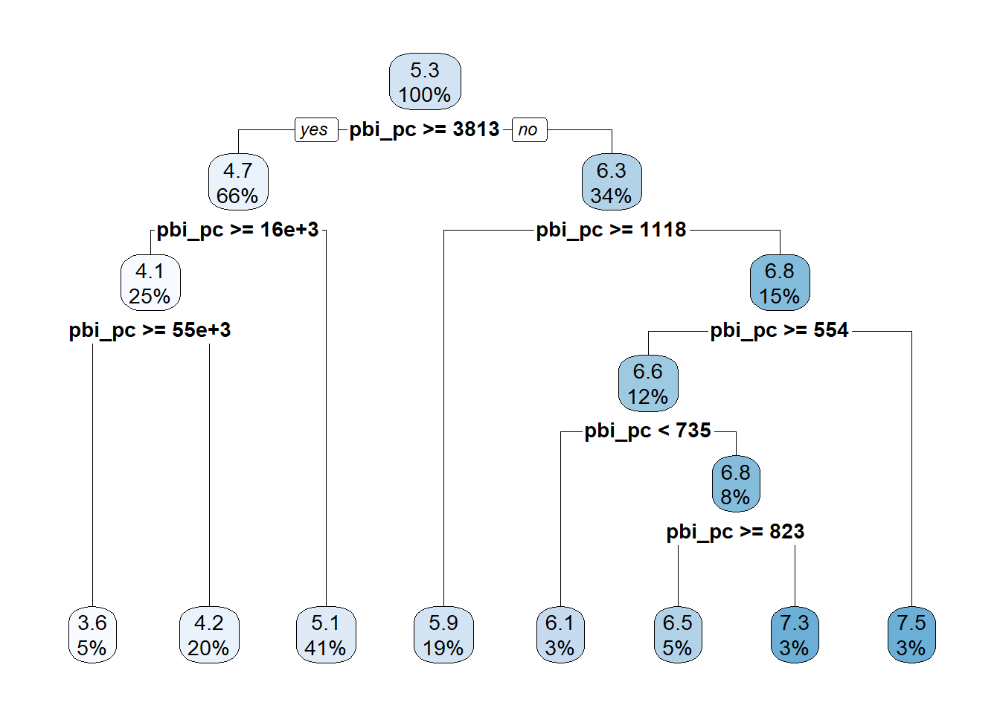
En este caso, el primer número de cada recuadro es el valor promedio de y (aml_index) en cada sección. Luego aparece el promedio del nodo original que se va a tal o cual nodo.
6.1.5 Aplicación con dos predictoras numéricas
mi_receta_arbol <- recipe(aml_index ~ pbi_pc + rule_of_law, data = training_data)
arbol <- decision_tree() |>
set_engine("rpart") |>
set_mode("regression")
wf_arbol <- workflow() |>
add_recipe(mi_receta_arbol) |>
add_model(arbol)
fit_arbol <- wf_arbol |>
fit(training_data)
fit_arbol══ Workflow [trained] ══════════════════════════════════════════════════════════
Preprocessor: Recipe
Model: decision_tree()
── Preprocessor ────────────────────────────────────────────────────────────────
0 Recipe Steps
── Model ───────────────────────────────────────────────────────────────────────
n= 59
node), split, n, deviance, yval
* denotes terminal node
1) root 59 66.593350 5.266441
2) pbi_pc>=3813.495 39 18.884070 4.723333
4) pbi_pc>=15749.22 15 3.088373 4.074667 *
5) pbi_pc< 15749.22 24 5.539462 5.128750
10) rule_of_law>=0.5721363 7 0.404600 4.780000 *
11) rule_of_law< 0.5721363 17 3.932906 5.272353 *
3) pbi_pc< 3813.495 20 13.773500 6.325500
6) pbi_pc>=1118.465 11 4.157018 5.922727 *
7) pbi_pc< 1118.465 9 5.650956 6.817778 *El resultado del modelo lo podemos visualizar con:
library(rpart.plot)
fit_arbol |>
extract_fit_engine() |>
rpart.plot()Warning: Cannot retrieve the data used to build the model (model.frame: objeto '..y' no encontrado).
To silence this warning:
Call rpart.plot with roundint=FALSE,
or rebuild the rpart model with model=TRUE.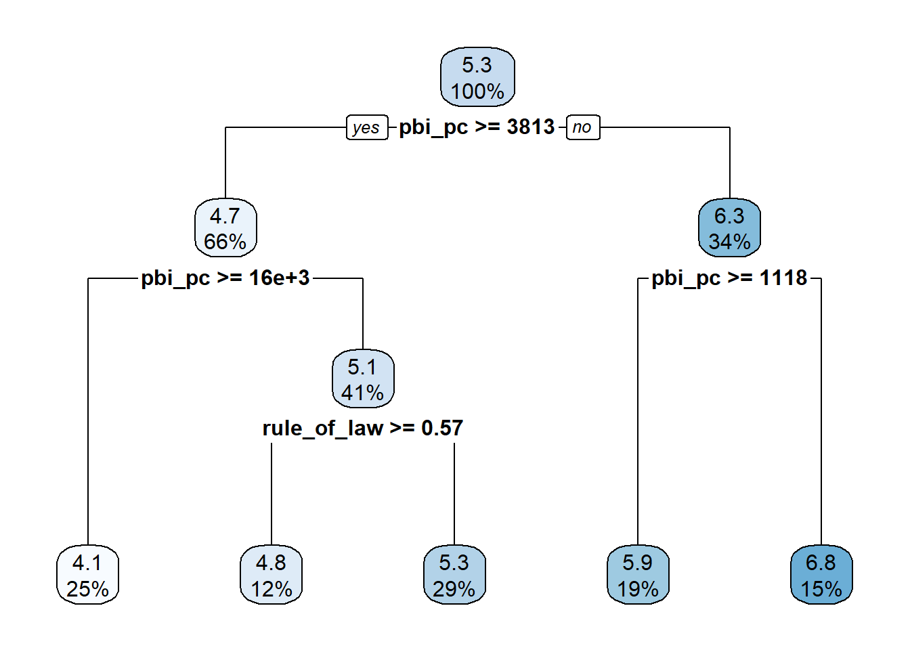
6.1.6 Aplicación con dos predictoras numéricas y un factor
mi_receta_arbol <- recipe(aml_index ~ pbi_pc +
rule_of_law+
continente,
data = training_data)
arbol <- decision_tree() |>
set_engine("rpart") |>
set_mode("regression")
wf_arbol <- workflow() |>
add_recipe(mi_receta_arbol) |>
add_model(arbol)
fit_arbol <- wf_arbol |>
fit(training_data)
fit_arbol══ Workflow [trained] ══════════════════════════════════════════════════════════
Preprocessor: Recipe
Model: decision_tree()
── Preprocessor ────────────────────────────────────────────────────────────────
0 Recipe Steps
── Model ───────────────────────────────────────────────────────────────────────
n= 59
node), split, n, deviance, yval
* denotes terminal node
1) root 59 66.5933500 5.266441
2) pbi_pc>=3813.495 39 18.8840700 4.723333
4) pbi_pc>=15749.22 15 3.0883730 4.074667 *
5) pbi_pc< 15749.22 24 5.5394620 5.128750
10) rule_of_law>=0.5721363 7 0.4046000 4.780000 *
11) rule_of_law< 0.5721363 17 3.9329060 5.272353 *
3) pbi_pc< 3813.495 20 13.7735000 6.325500
6) continente=Americas,Asia 7 0.9899714 5.704286 *
7) continente=Africa 13 8.6276000 6.660000 *Lo visualizamos:
fit_arbol |>
extract_fit_engine() |>
rpart.plot()Warning: Cannot retrieve the data used to build the model (model.frame: objeto '..y' no encontrado).
To silence this warning:
Call rpart.plot with roundint=FALSE,
or rebuild the rpart model with model=TRUE.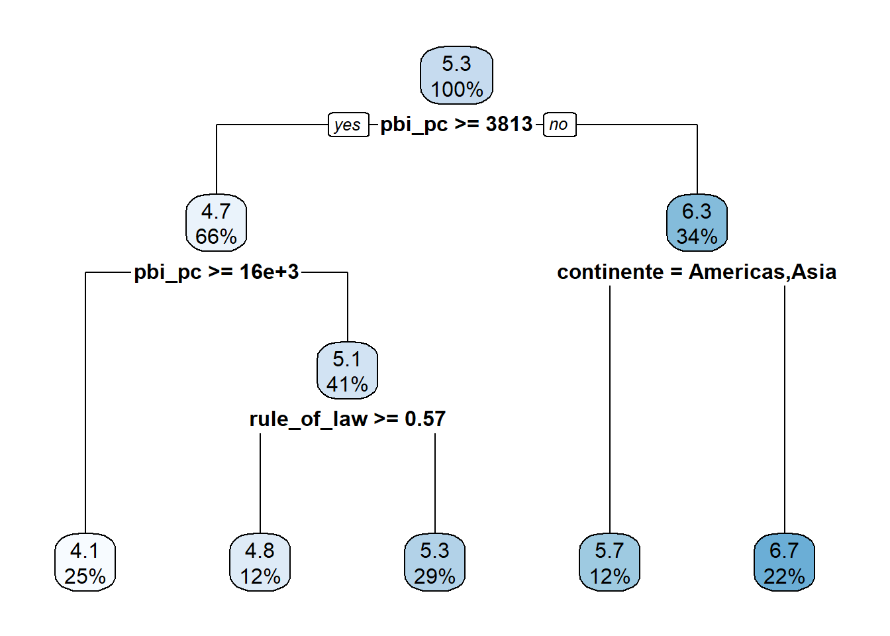
6.1.7 Importancia de las variables
La importancia de variables es un ranking que indica cuánto aporta cada predictor a las mejoras de predicción del árbol.
Para qué sirve: priorizar predictores, simplificar cuestionarios/inputs (coste), detectar variables inútiles o fugas de información, y comunicar qué factores “pesan” más en términos predictivos.
library(vip)
fit_arbol |>
extract_fit_engine() |>
vip()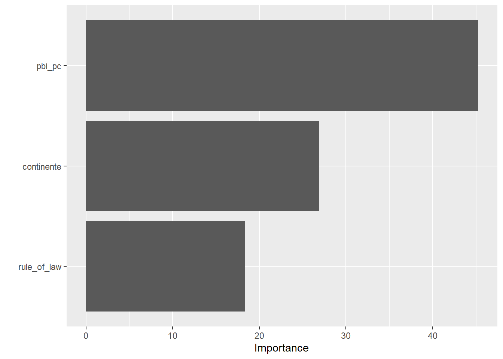
6.1.8 Comparación RL y Árbol de Decisión
Considerando las mismas variables:
mi_receta <- recipe(aml_index ~ pbi_pc + rule_of_law+ continente,
data = training_data)¿Cuál modelo logrará la mejor predicción, la regresión lineal o el árbol de decisión?
arbol <- decision_tree() |>
set_engine("rpart") |>
set_mode("regression")
wf_arbol <- workflow() |>
add_recipe(mi_receta_arbol) |>
add_model(arbol)
fit_arbol <- wf_arbol |>
fit(training_data)
fit_arbol |>
predict(testing_data) |>
bind_cols(valor_real=testing_data$aml_index) |>
rmse(truth = valor_real,
estimate = .pred)# A tibble: 1 × 3
.metric .estimator .estimate
<chr> <chr> <dbl>
1 rmse standard 0.602En este caso, la regresión lineal ha probado seguir siendo la mejor opción (RMSE = 0.56). No obstante, se encuentran muy cerca en cuanto a su rendimiento.
6.1.9 Encontrar el balance entre sesgo y varianza
En el aprendizaje automático, el desempeño de un modelo predictivo puede entenderse a partir de dos fuentes principales de error: sesgo y varianza.
ALTO SESGO = UNDERFITTING
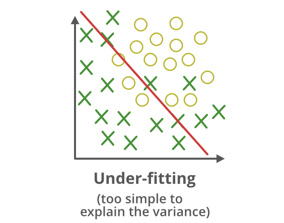
El sesgo (bias) hace referencia al error sistemático que introduce un modelo al imponer supuestos demasiado rígidos sobre la relación entre las variables. Un modelo con alto sesgo es incapaz de capturar patrones relevantes de los datos y produce predicciones alejadas de la realidad.
Este fenómeno se conoce como subajuste (underfitting): el modelo resulta demasiado simple para la complejidad del problema.
ALTA VARIANZA = OVERFITTING
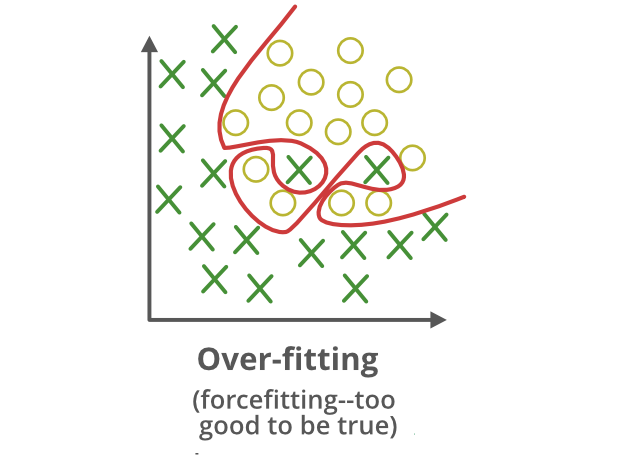
Refleja la sensibilidad del modelo a las particularidades de los datos de entrenamiento. Un modelo con alta varianza se ajusta en exceso a las muestras disponibles, incluso capturando ruido o fluctuaciones aleatorias.
Como consecuencia, presenta un buen desempeño en el conjunto de entrenamiento, pero pierde capacidad de generalización frente a nuevos datos. A este problema se le denomina sobreajuste (overfitting).
BALANCE
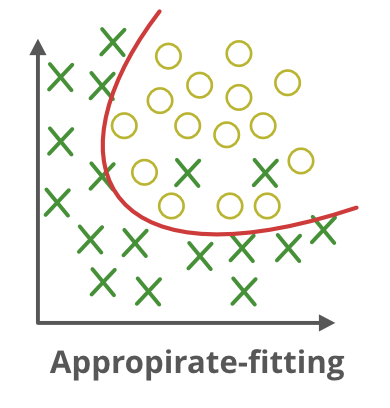
El objetivo del modelado es encontrar un equilibrio adecuado entre ambos, logrando así un modelo con capacidad de generalizar: ni tan simple que subajuste, ni tan complejo que sobreajuste.
Tip
Para solucionar este problema en el caso de los árboles podemos probar otro algoritmo denominado RANDON FOREST!
6.2 Random Forest
6.2.1 Definición
Random Forest es un modelo de ensamble que combina muchos árboles de decisión para mejorar la capacidad de generalización. Cada árbol se entrena sobre una muestra bootstrap (con reemplazo) del conjunto de datos y, en cada división, considera solo un subconjunto aleatorio de predictores.
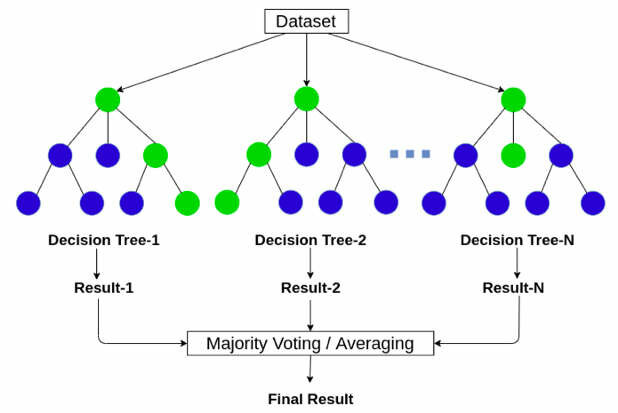
En regresión, la predicción final es el promedio de los árboles. Esta aleatoriedad + agregación reduce la varianza del árbol individual y hace al modelo robusto sin requerir preprocesamientos complejos.
6.2.2 Ventajas y desventajas
Ventajas:
Captura no linealidades e interacciones automáticamente.
Suele rendir bien “out-of-the-box” y es estable frente a ruido.
No requiere normalización de variables; funciona con muchas x.
Proporciona importancia de variables.
Desventajas:
Menor interpretabilidad que un árbol único.
Puede ser pesado en memoria/tiempo con muchos árboles o datos muy grandes.
6.2.3 Aplicación con tidymodels
Vamos con la misma receta del árbol:
mi_receta <- recipe(aml_index ~ pbi_pc + rule_of_law+ continente,
data = training_data)Aplicamos el workflow utilizando la función rand_forest():
bosque_model <- rand_forest(trees = 1000,
min_n = 5) |>
set_engine("ranger", importance = "permutation") |>
set_mode("regression")Iniciamos el workflow():
bosque_wf <- workflow() |>
add_recipe(mi_receta) |>
add_model(bosque_model)Ahora fiteamos el modelo y calculamos el RMSE.
fit_bosque <- bosque_wf |>
fit(training_data)6.2.4 Comparación RL, DT, RF
Excelente!!! Ahora conseguir una mejor performance predictiva!!
fit_bosque |>
predict(testing_data) |>
bind_cols(valor_real=testing_data$aml_index) |>
rmse(truth = valor_real,
estimate = .pred)# A tibble: 1 × 3
.metric .estimator .estimate
<chr> <chr> <dbl>
1 rmse standard 0.5136.2.5 Importancia de variables
También podemos comprobar la importancia de las variables:
fit_bosque |>
extract_fit_engine() |>
vip()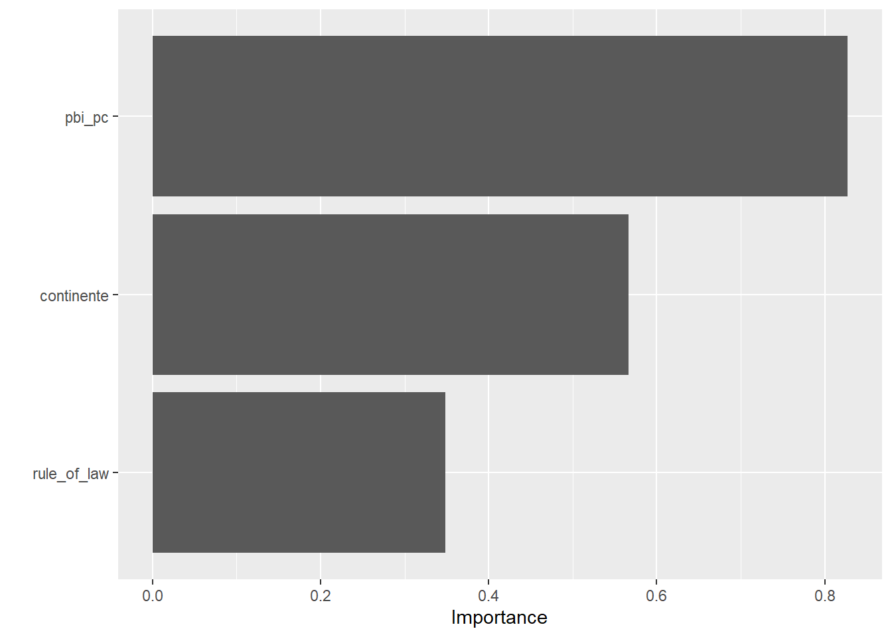
6.3 Tuneo de hiperparámetros: Randon Forest
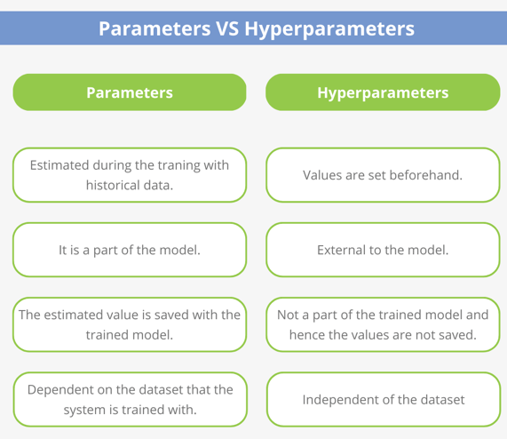
Los modelos de aprendizaje automático no solo aprenden a partir de los datos, sino que también dependen de una serie de hiperparámetros, es decir, configuraciones definidas por el usuario que controlan cómo se entrena el modelo. Estos hiperparámetros no se ajustan automáticamente durante el entrenamiento (a diferencia de los parámetros internos, como los coeficientes de una regresión), sino que deben seleccionarse por el usuario o analista.
El proceso de tuning o ajuste de hiperparámetros busca encontrar la combinación de valores que produzca el mejor equilibrio entre sesgo y varianza, logrando así un modelo con mayor capacidad de generalización. Para ello, se utilizan técnicas como la validación cruzada (cross-validation) que aprendimos la clase pasada, la cual permitirá evaluar el desempeño de múltiples configuraciones en diferentes particiones de los datos de entrenamiento.
6.3.1 Indicamos los hiperparámetros a tunear
Aunque el Random Forest ofrece un buen desempeño incluso con sus valores por defecto, el ajuste de hiperparámetros puede mejorar significativamente su capacidad predictiva y eficiencia. Los parámetros más relevantes son mtry (número de predictores considerados en cada división), min_n (tamaño mínimo de los nodos terminales) y trees (número total de árboles). Ajustarlos permite encontrar un mejor balance entre sesgo, varianza y costo computacional, aunque el algoritmo ya se considera robusto frente a problemas de sobreajuste sin necesidad de un tuning intensivo.
Aplicamos el workflow utilizando la función rand_forest() y colocamos tune() en el hiperparámetro que deseamos tunear. En este caso seleccionamos min_n, el cual indica el número mínimo de casos que existirá en las ramificaciones.
bosque_model_tune <- rand_forest(trees = 1000,
min_n = tune()) |> # OJO CON tune()!!!!!!!
set_engine("ranger",
importance = "permutation") |>
set_mode("regression")Iniciamos el workflow():
bosque_wf_tune <- workflow() |>
add_recipe(mi_receta) |>
add_model(bosque_model_tune)6.3.2 Creamos un remuestreo CV
Primero, crearemos un conjunto de remuestreos de validación cruzada para el ajuste. Esto es necesario porque no podemos aprender los valores correctos al entrenar un solo modelo, pero sí podemos entrenar varios modelos y ver cuáles funcionan mejor.
set.seed(2025)
folds <- vfold_cv(training_data, v= 5)Ahora seleccionamos una grilla (o una tabla) con los valores que vamos a probar en los distintos ajustes:
tune_rf <- tune_grid(bosque_wf_tune,
resamples = folds,
grid = 10)
tune_rf# Tuning results
# 5-fold cross-validation
# A tibble: 5 × 4
splits id .metrics .notes
<list> <chr> <list> <list>
1 <split [47/12]> Fold1 <tibble [20 × 5]> <tibble [0 × 4]>
2 <split [47/12]> Fold2 <tibble [20 × 5]> <tibble [0 × 4]>
3 <split [47/12]> Fold3 <tibble [20 × 5]> <tibble [0 × 4]>
4 <split [47/12]> Fold4 <tibble [20 × 5]> <tibble [0 × 4]>
5 <split [48/11]> Fold5 <tibble [20 × 5]> <tibble [0 × 4]># splits id .metrics .notes
# <S3: vfold_split> Fold1 <tibble> <tibble>
# <S3: vfold_split> Fold2 <tibble> <tibble>
# <S3: vfold_split> Fold3 <tibble> <tibble>
# <S3: vfold_split> Fold4 <tibble> <tibble>
# <S3: vfold_split> Fold5 <tibble> <tibble> Veamos los resultados.
tune_rf |>
collect_metrics() |>
filter(.metric=="rmse")# A tibble: 10 × 7
min_n .metric .estimator mean n std_err .config
<int> <chr> <chr> <dbl> <int> <dbl> <chr>
1 2 rmse standard 0.627 5 0.0558 pre0_mod01_post0
2 6 rmse standard 0.619 5 0.0514 pre0_mod02_post0
3 10 rmse standard 0.622 5 0.0497 pre0_mod03_post0
4 15 rmse standard 0.633 5 0.0518 pre0_mod04_post0
5 19 rmse standard 0.633 5 0.0487 pre0_mod05_post0
6 22 rmse standard 0.638 5 0.0491 pre0_mod06_post0
7 25 rmse standard 0.649 5 0.0480 pre0_mod07_post0
8 29 rmse standard 0.661 5 0.0465 pre0_mod08_post0
9 34 rmse standard 0.686 5 0.0388 pre0_mod09_post0
10 40 rmse standard 0.718 5 0.0341 pre0_mod10_post0Al parecer los valores bajos de min_n funcionan mejor que los altos. Esto claramente se debe al poco número de casos que tiene nuestra base de datos. Probemos con otros valores bajos a ver si conseguimos una mejor performance.
rf_grid <- grid_regular(min_n(range=c(2,8)), levels = 5)
rf_grid# A tibble: 5 × 1
min_n
<int>
1 2
2 3
3 5
4 6
5 8Solicitamos nuevamente el ajuste del modelo:
tune_rf <- tune_grid(bosque_wf_tune,
resamples = folds,
grid = rf_grid) ### AHORA LO ESPECIFICAMOS AÚN MÁS!
tune_rf# Tuning results
# 5-fold cross-validation
# A tibble: 5 × 4
splits id .metrics .notes
<list> <chr> <list> <list>
1 <split [47/12]> Fold1 <tibble [10 × 5]> <tibble [0 × 4]>
2 <split [47/12]> Fold2 <tibble [10 × 5]> <tibble [0 × 4]>
3 <split [47/12]> Fold3 <tibble [10 × 5]> <tibble [0 × 4]>
4 <split [47/12]> Fold4 <tibble [10 × 5]> <tibble [0 × 4]>
5 <split [48/11]> Fold5 <tibble [10 × 5]> <tibble [0 × 4]>Vemos nuevamente los resultados:
tune_rf |>
collect_metrics()# A tibble: 10 × 7
min_n .metric .estimator mean n std_err .config
<int> <chr> <chr> <dbl> <int> <dbl> <chr>
1 2 rmse standard 0.625 5 0.0556 pre0_mod1_post0
2 2 rsq standard 0.690 5 0.0767 pre0_mod1_post0
3 3 rmse standard 0.625 5 0.0546 pre0_mod2_post0
4 3 rsq standard 0.690 5 0.0778 pre0_mod2_post0
5 5 rmse standard 0.626 5 0.0517 pre0_mod3_post0
6 5 rsq standard 0.694 5 0.0744 pre0_mod3_post0
7 6 rmse standard 0.622 5 0.0519 pre0_mod4_post0
8 6 rsq standard 0.695 5 0.0741 pre0_mod4_post0
9 8 rmse standard 0.619 5 0.0518 pre0_mod5_post0
10 8 rsq standard 0.699 5 0.0769 pre0_mod5_post06.3.3 Seleccionamos el mejor modelo
Una vez probado con diversas posibilidades para nuestro hiperparámetro en cuestión, vamos a seleccionar nuestro mejor resultado para finalmente ir a modelar.
best_rmse <- select_best(tune_rf, # Usamos nuestro último modelo
metric ="rmse") # Seleccionamos el criterioColocamos finalizar modelo, porque vamos a finalizar el modelo con el tune().
final_rf <- finalize_model(bosque_model_tune,
best_rmse)
final_rfRandom Forest Model Specification (regression)
Main Arguments:
trees = 1000
min_n = 8
Engine-Specific Arguments:
importance = permutation
Computational engine: ranger Exploremos el modelo final.
final_wf <- workflow() |>
add_recipe(mi_receta) |>
add_model(final_rf)
final_evaluation <- final_wf |>
last_fit(index)
Tip
¿last_fit() vs fit()?
¿Qué hace last_fit():
Toma un split de rsample (creado con initial_split()).
Entrena el workflow en training y evalúa en testing automáticamente.
Devuelve métricas en test (collect_metrics()), además del workflow final ajustado (útil para predict()).
¿Por qué se prefiere a fit() para la evaluación final
Evita fugas de información: nunca toca el test durante el entrenamiento.
Estandariza el “examen final”: un solo paso que entrena en train y reporta métricas en test.
Respeta la recipe tal como quedó definida (pasos de preprocesamiento se estiman solo con train y se aplican a test correctamente).
Produce un objeto listo para inspección y despliegue (extraer modelo, predicciones, etc.).
Finalmente, solicitamos las métricas finales.
final_evaluation |>
collect_metrics()# A tibble: 2 × 4
.metric .estimator .estimate .config
<chr> <chr> <dbl> <chr>
1 rmse standard 0.524 pre0_mod0_post0
2 rsq standard 0.892 pre0_mod0_post0